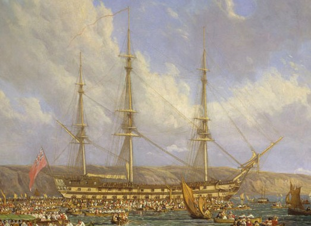

나폴레옹 시대 영국 전함의 전투 광경 - Lieutenant Hornblower 중에서 (12)
게시: 2019-04-29T06:30:00+09:00
혼블로워는 머리가 헝클어지고 옷도 서둘러 끼워입은 티가 나는 모습으로, 감탄이 나올 정도로 재빨리 선실에 나타났다. 들어서면서 그는 초조한 듯이 선실을 둘러 보았는데, 왜 상관들이 있는 이 선실로 소환이 되었는지에 대해 불안해하며 마음 고생을 한 것이 분명했고, 그 불안함은 사실 근거가 없는 것은 아니었다. "내가 들은 이 작전 계획이란 게 대체 뭔가 ?" 버클랜드가 물었다. "듣자하니 요새를 습격하는 것에 대해 뭔가 제안할 것이 있다더군, 미스터 혼블로워." 혼블로워는 즉각 대답을 하지는 않았다. 그는 그의 논점에 대해 정리하고 이 새로운 상황에 비추어 그의 최초 작전 계획을 재점검하고 있었다. 부시는 리나운 호의 공격 시도가 실패하는 바람에 기습이라는 초기 이점을 잃은 상황에서 그의 작전 계획에 대해서 말하라고 요청받는 것은 혼블로워에게 부당한 일이라고 생각했다. 그러나 부시가 보아하니 혼블로워는 그의 생각을 재정리하고 있었다. "저는 상륙 작전이 더 가능성이 있다고 생각했습니다, 함장님." 그가 말했다. "하지만 그건 스페인놈들(Dons : 스페인 사람들을 비하하는 명칭)이 인근에 전열함이 와있다는 것을 알아채기 전의 이야기였습니다." "그래서 이젠 가능성이 없다라는 이야기인가 ?" 버클랜드의 목소리에는 안도와 실망이 뒤섞인 듯 했다. 안도는 그가 더 이상 뭔가 결정을 내리지 않아도 된다는 것에 대한 것이었고, 실망은 성공을 거둘 뭔가 쉬운 방법이 없을 것 같다는 것에 대해서였다. 하지만 혼블로워는 이제 충분히 생각을 정리하고 시간과 거리에 대해서도 생각한 모양이었다. 그의 얼굴에 그게 보였다. "한번 시도해볼 만한 것이 있긴 합니다, 함장님. 즉각 실행하기만 한다면요." "당장 ?" 지금은 한밤중이었고 수병들은 지친 싱태였다. 버클랜드의 목소리에는 당장 행동에 옮겨야 한다는 제안에 대한 놀람이 드러났다. "오늘밤을 말하는 것은 아니겠지 ?" "오늘밤이 가장 좋은 시간입니다. 스페인놈들이 우리가 꼬리를 말아쥐고 후퇴하는 것을 보지 않았습니까 ? 표현 죄송합니다, 함장님. 하지만 최소한 그들에게는 그렇게 보였을 겁니다. 그들이 본 우리의 마지막 모습은 석양 무렵에 사마나 만을 거슬러 올라가는 것이었지요. 걔들은 아주 기분이 좋았을 겁니다. 얼마나 그럴지 잘 아실 겁니다, 함장님. 그러니 육지쪽 다른 방면으로부터 새벽에 공격이 있으리라고는 전혀 예상하지 못할 겁니다." 부시에게는 그럴 듯 하게 들렸다. 그는 그에 동조하는 작은 소리를 냈는데, 그게 이 토의에서 그가 기여할 수 있는 최대한의 모험이었다. "이 공격을 자네라면 어떻게 조직하겠나, 미스터 혼블로워 ?" 버클랜드가 물었다. 혼블로워는 이제 그의 생각을 완전히 정리해놓고 있었다. 얼굴에 지친 표정이 사라지더니 이젠 열정이 빛나고 있었다. "스캇츠맨 만을 향하기에 바람이 좋습니다. 아마 2시간 안에, 그러니까 자정 이전에 그리로 되돌아갈 수 있을 겁니다. 우리가 도착할 때 즈음이면 상륙조를 짜서 준비시켜 놓을 시간이 충분합니다. 수병 100명과 해병들을 동원하면 됩니다. 거기에 상륙하기 좋은 해변이 있더군요. 어제 보았지요. 거기 내륙은 습지투성이일 겁니다. 반도의 언덕이 다시 시작되는 곳 이전까지는 말이지요. 하지만 우리는 습지의 반도쪽 측면에 상륙할 수 있습니다. 어제 그 지점을 봐놨습니다, 함장님." "그래서 ?" 혼블로워는 거기까지 이야기해줘도 상상력을 동원해서 더 나아갈 능력이 없는 사람도 있다는 것을 흠칫 깨달았다. "상륙조는 능선까지 별 어려움 없이 도달할 수 있을 겁니다, 함장님. 길을 잃거나 할 가능성은 없습니다. 한 쪽은 바다고 다른 쪽은 사마나 만이니까요. 그들은 능선을 따라서 전진하면 됩니다. 그러면 새벽에 요새를 습격할 수 있습니다. 습지와 절벽이 있으니 스페인놈들은 그 쪽으로는 경계를 소홀히 할 거라고 생각합니다, 함장님." "자네 말에 따르면 굉장히 쉽게 들리는군, 미스터 혼블로워. 하지만 180명이라고 ? (PS2 참조 : 역주)" "그 정도면 충분합니다, 함장님." "뭐 때문에 그렇게 생각하나 ?" "그 요새에서 우리에게 발포한 대포는 모두 6문이었습니다. 최대로 따져 봐도 그 요새의 인원수는 아마 90명, 아마 60명이 더 맞을 겁니다. 탄약조와 가열로에서 일하는 인원을 다 합해도 150명 정도일 겁니다. 어쩌면 100명 정도일 수도 있습니다." "하지만 그게 그들 병력 전부라고 어떻게 확신하지 ?" "스페인놈들은 섬의 그 쪽으로부터는 우려할 것이 없습니다. 그들은 흑인 반란노예들과 어쩌면 프랑스군, 그리고 자메이카의 영국군에 대해 방비하고 있지요. 흑인들이 습지를 지나 그들을 공격할 이유가 없습니다. 위험이 도사라는 쪽은 사마나 만의 남쪽입니다. 스페인놈들은 머스켓 소총을 쥘 수 있는 인원은 모조리 그 쪽에 배치했을 겁니다. 그 쪽이 도시가 있는 쪽이고 그 쪽이 이 투쌩(Toussaint : 아이티의 노예 반란 지도자. PS1 참조)인지 뭔지 하는 친구가 으르렁 대고 있는 쪽입니다, 함장님." 이 긴 말의 마지막 단어는 뒤늦게나마 운 좋게 생각해낸 덕분에 나온 것이었다. 분명히 혼블로워는 뻔한 내용을 상관에게 너무 설교하듯 지적하지 않으려 애쓰고 있었다. 그리고 부시는 이 아무렇지 않다는 듯이 나온 흑인들과 프랑스군 이야기에 버클랜드가 불편해서 몸을 꿈틀거리는 것을 볼 수 있었다. 부시는 볼 자격이 없었던 그 비밀 명령서에는 산토 도밍고(Santo Domingo, 아이티 동부입니다)의 복잡한 정치적 상황에 관련된 무언가 과감한 지시 사항들이 담겨있음이 틀림없었다. 산토 도밍고에서는 반란 노예들과 프랑스군과 스페인군이 서로 패권을 놓고 쟁탈전을 벌이고 있었는데, 프랑스와 스페인은 형식적으로나마 동맹 관계인데도 그 지경이었다. "우리는 이 일에서 흑인들과 프랑스군은 일단 빼지." 버클랜드는 그렇게 말함으로써 부시의 의심을 확신으로 바꿔 놓았다. "예, 함장님. 하지만 스페인놈들은 안 그럴 겁니다." 혼블로워는 별로 당황하지 않고 말했다. "현재로서는 그들은 우리보다는 흑인들을 더 두려워 하고 있습니다." "그러니까 자넨 이 공격이 성공할 것 같다는 거지 ?" 버클랜드는 화제를 바꾸려 애를 쓰며 말했다. "그럴 것 같습니다, 함장님. 하지만 시간이 계속 흘러가고 있군요." -----------------
PS1. 투쌩과 아이티(생 도밍그 = 산토 도밍고) 노예 반란 사건에 대해서는 아래 link를 참조하시기 바랍니다. https://nasica1.tistory.com/84

(전형적인 74문짜리 3등급 전열함인 HMS Bellerophon 입니다. 2열의 포갑판을 가지고 있습니다.)
PS.2 혼블로워가 '수병 100명과 해병들'이라고 말하니까 버클랜드가 '180명?'이라고 묻는 것으로 보아, 74문짜리 3등급 전열함인 리나운 호의 해병 숫자는 총 80명 정도로 보입니다. 실제로 당시 74문짜리 전열함의 총 승조원 숫자는 대략 500~650명 정도인데, 전열함에 탑승하는 해병의 숫자는 대략 포 1문당 1명 플러스 장교 숫자라고 합니다. 그러니까 대략 74문짜리 전열함에는 80여명이 탑승하는 것이 맞습니다.
Source : http://www.britishmedals.us/collections/GA/brady.html